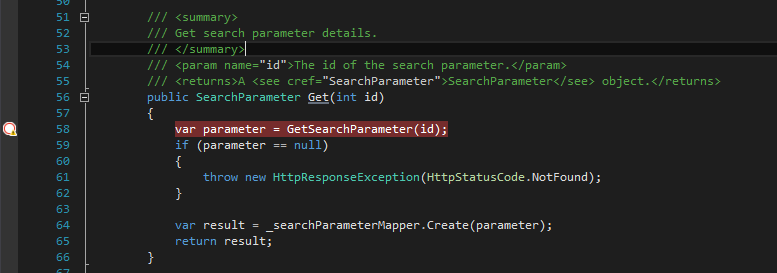
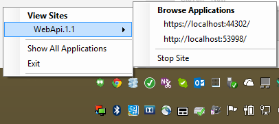
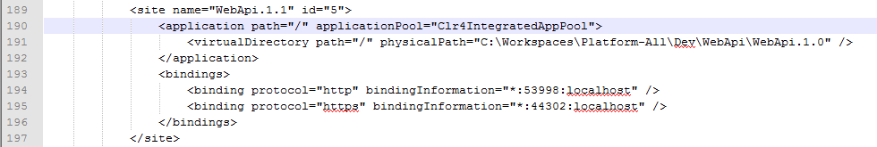

Resolving "No symbols have been loaded for this document" in web projects
I've run into this problem a number of times probably due to my own hackery. I must have copied a project wrong or something. It turns out that not too infrequently I'll start to debug a web project and IIS Express will start to host it, but in fact it is hosting the wrong code in a completely different folder.
To resolve:
- Right click IIS Express and note the site name and the ports it is hosted on.
 - Now open C:\Users\<username>\Documents\IISExpress\config\applicationhost.config
- Search for the site name and the port name to find the right site element in the config file.
 - Verify that the virtualDirectory path is set to the correct folder. If it is not correct (as is clear in the above image), then correct the path and save the config file. Stop debugging and/or shutdown IIS Express. When you start debugging again, you should now be able to breakpoint code you previously could not due to "No symbols have been loaded for this document."